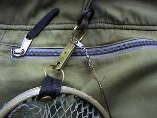
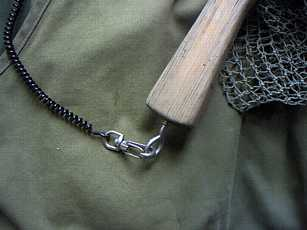

私のお気に入り
釣り道具 リバレイ ゴアテックス レインジャケット
ランディングネットをどうやって身につけるか？ これは、なかかな奥が深い問題です。
ネットリトリ―バ―に要求されるポイントとしては、
○邪魔にならない位置でネットが装着できるか？
○必要なときにワンタッチでネットがベストからはずせるか？
○手を離しても、ネットが流されないか？
○ネットの再装着が簡単に出来るか？
といったところでしょうか。
私の場合、下記のような遍歴を経て、現在に至っています。
- 最 初
- アメリカ製の KEY BAK キーバックチェ―ン をベスト襟元のル―プに装着。キ―リングにネットを結ぶ。この作戦は、チェ―ンを最大に延ばしてもちょっと長さが足りなくて、ヒモを追加していました。強力なスプリングでチェーンを巻き取る機構なので、手を離すとネットが勢い良く背中に引き戻され、運が悪いと頭を叩かれました。（笑）
KEY BAK社 キーバックチェ―ン
画像はアマゾンより引用このキーバックチェーンという製品はとても古くからあり、アメリカ映画で警察官や警備員の方がベルトに付けて使っているシーンをよく見かけます。また、継続して改良が行われているようで、チェーンがステンレスやケブラーのタイプ、チェーンの長さも各種あるようですので、お好みの製品を探してみて下さい。
最近もベテランアングラーの方が使っているところを釣り番組で見ました。KEY BAK社のサイトには、小型のピンオンリール、作業用工具のラニヤードなど、たくさんの製品が載っています。
- 第２段階
- アメリカ製 真鍮製のネットリトリ―バ―（ワンタッチで外れる。製品名は忘れてしまいました）に変更。このタイプにしてから、ネットの脱着が簡単になりました。しかし、少し重いことと、ネットが薮漕ぎ時に枝に引っかかって外れてしまい、流失する懸念がありました。
- 第３段階
- 同じく、アメリカ EDGIN社製 HANDY CLIP に変更。金具自体はコンパクトかつ軽量になり、脱着操作も簡単になりました。しかし、まだ流失の懸念は無くなっていません。

- 第４段階
- 第３段階に加え、釣具店で売っている尻手コ―ドをネットに装着して、現在に至ります。魚を取り込んでからネットの柄に結んだコ―ドを外すと、ネットを手元まで持ってくることができます。
これでやっと不意の脱落と流失の懸念が解消されました。

真鍮製の金具、 HANDY CLIP がベスト襟元のＤリングと、ランディングネットのフレ―ム先端とを連結する。魚を釣った時にはネットの柄を引けばワンタッチでネットが外れる。
小型のクリップと伸縮性のある尻手コ―ドでネットと襟元のＤリングとを連結している。

ネットの柄にリングをねじ込み、尻手コ―ドを小型のクリップで連結する。魚を取り込んだ後でクリップを外せば、ネットを川岸に置くことができます。
1998/12 初稿
2020/02/22 加筆
2020/02/22 加筆
私のお気に入り 目次へ
サイトマップ
ホームへ
お問い合わせ